MILK & ROSE
Selected earlier explorations from an ongoing brand and web design project for a jewelry label.
Brand Design / Web Design / UI·UX / Front-End Development
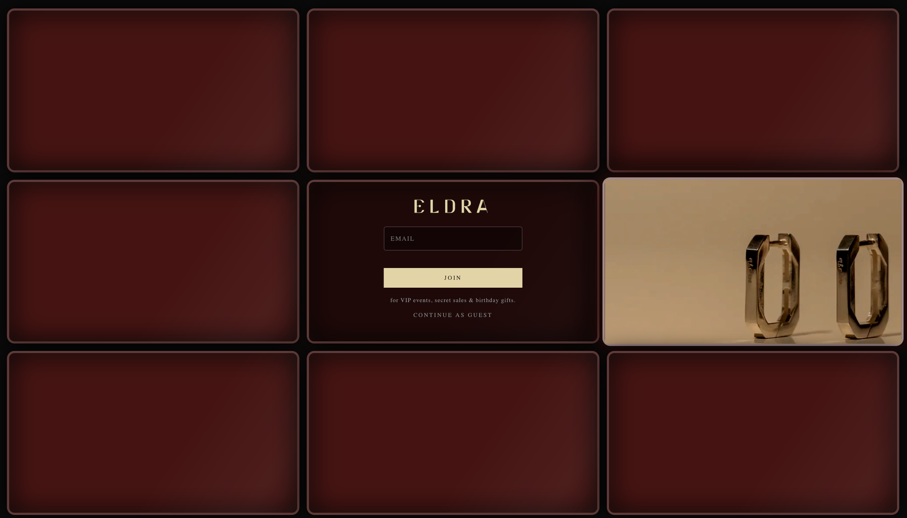
Overview
Milk & Rose is an ongoing brand and web design project for a jewelry label. The project initially explored the possibility of developing a separate sister brand before shifting back toward evolving the existing Milk & Rose identity.
My work has included visual and competitor research, moodboards, typography and color exploration, web concepts, and front-end development. As the project has progressed, the visual direction has continued to change in response to the developing brand.
Because the redesign is still in progress, this case study focuses on selected earlier explorations rather than revealing the current unfinished direction.
Early Direction
The project initially explored the possibility of creating a sister brand with a different identity. Early moodboards focused on a more elevated, high-end direction and helped establish an initial visual starting point for the project. This was an exploration rather than a finalized identity.
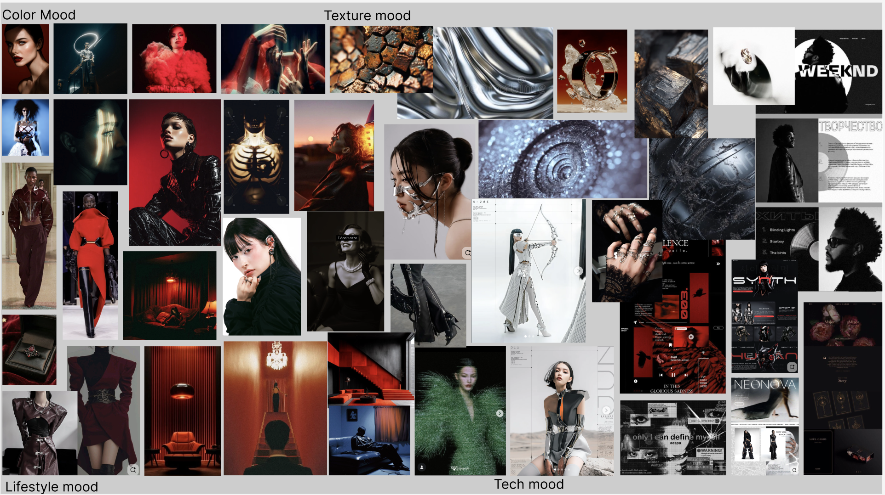
Research
I researched how other jewelry and fashion brands use typography, imagery, color, layout, and digital presentation to establish a sense of identity. Rather than copying a specific visual language, I used this research to understand common conventions and identify opportunities for Milk & Rose to develop a more distinctive presence.
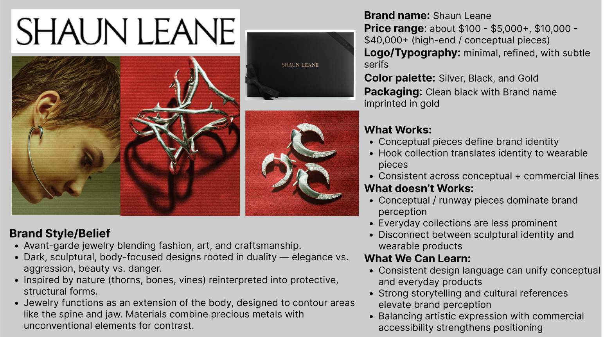
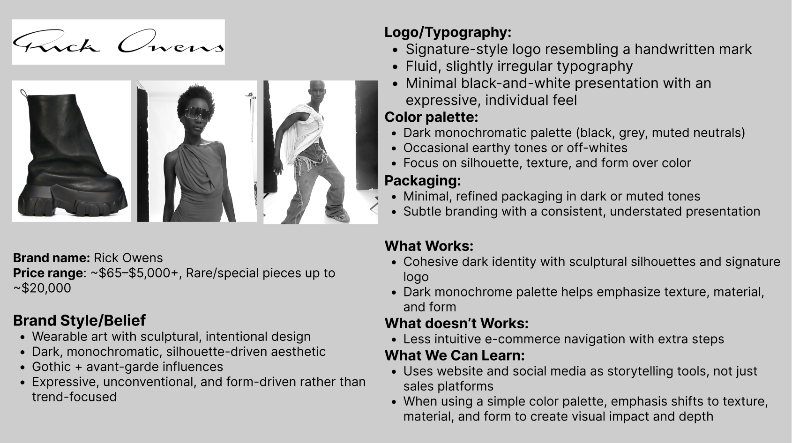
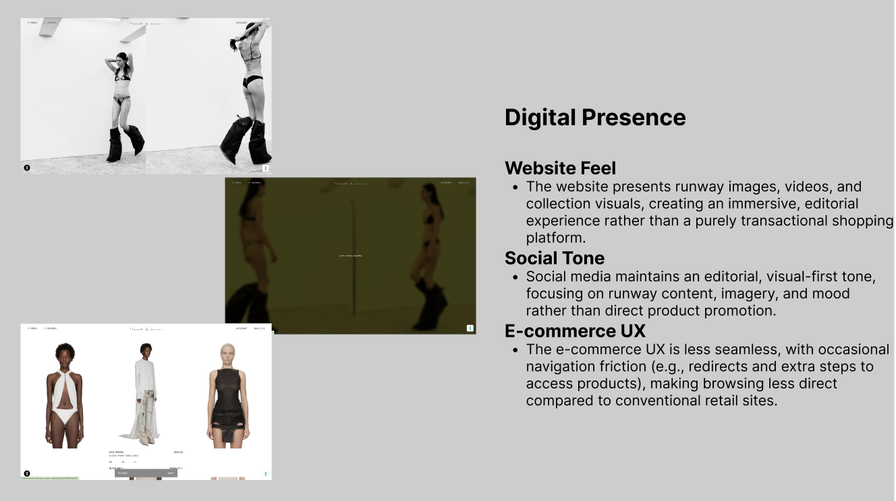
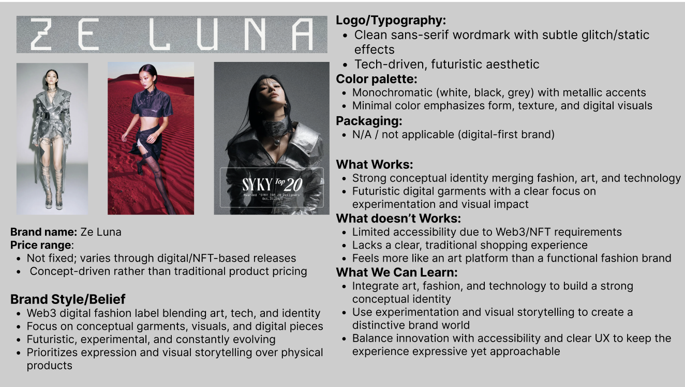
Visual Exploration
Typography, color, image direction, and composition were explored together to test different ways the brand could position itself visually. These selected studies are earlier experiments, not finalized brand guidelines or the current identity.
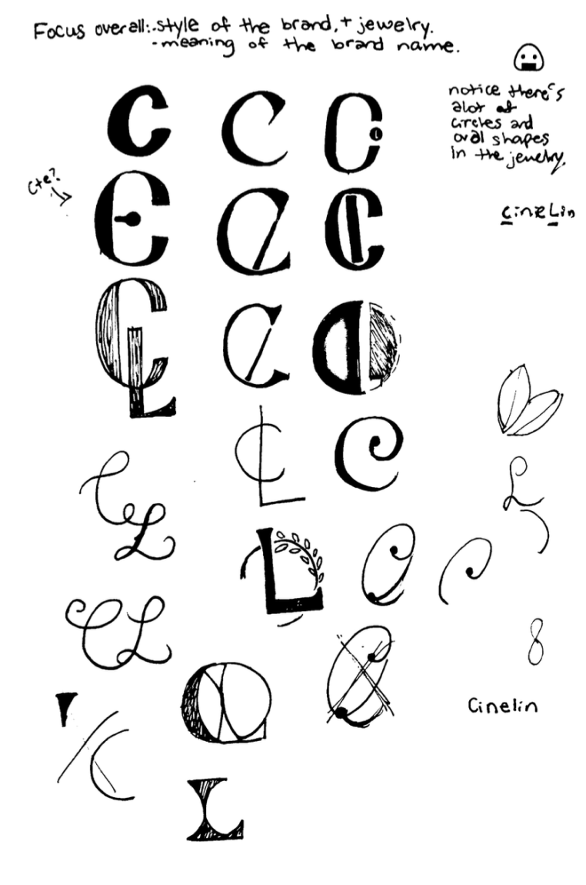
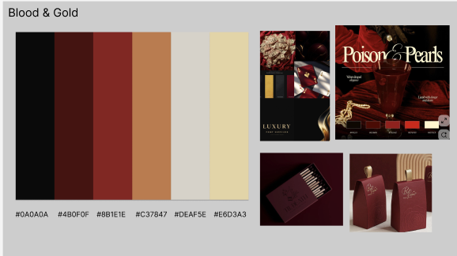
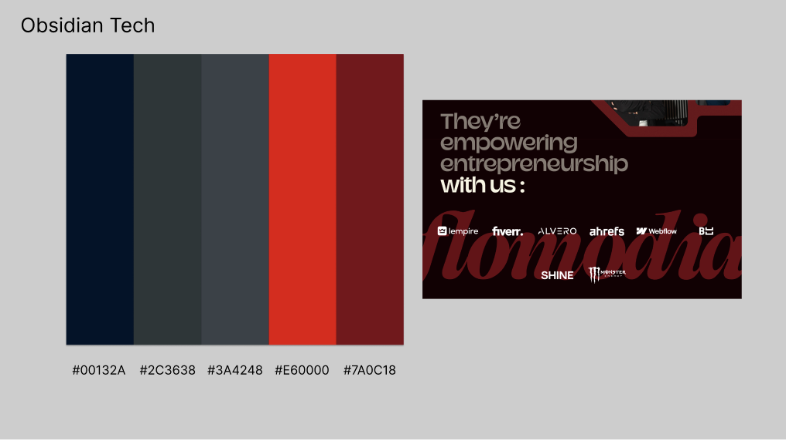
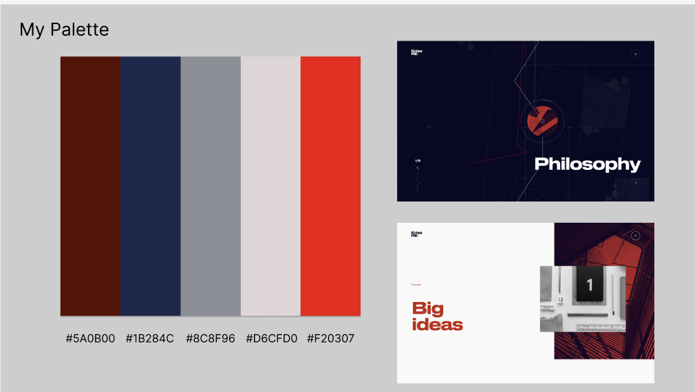
Direction Shift
As the project developed, the direction shifted away from creating a separate sister brand. Instead, the focus returned to Milk & Rose itself and how the existing brand could evolve while developing a stronger visual identity.
Early Web Concepts
Early web drafts tested variations in layout, featured collections, and the balance between imagery and content. The three explorations below retain the earlier working name.
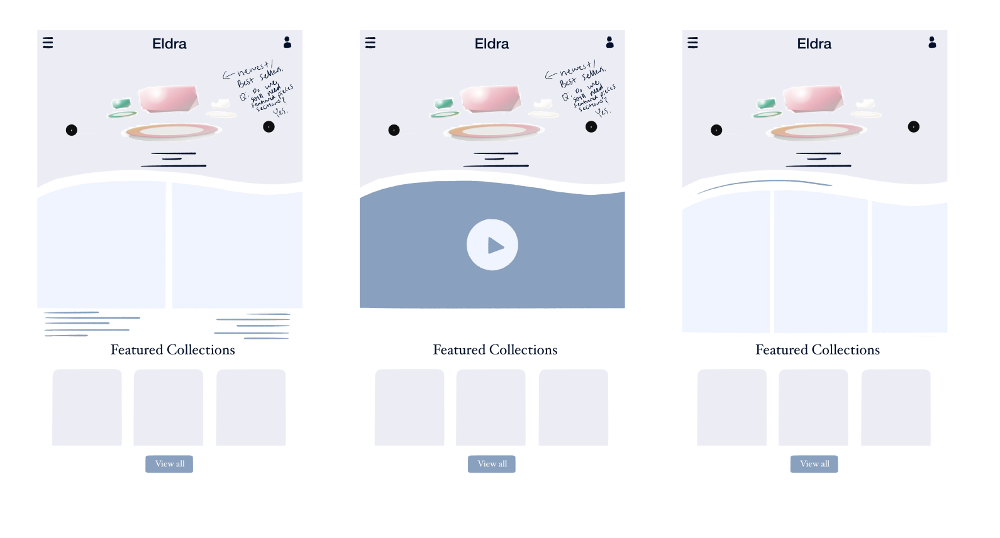
Landing Page Exploration
During one stage of the project, I explored a landing page built around multiple screen-like frames. The composition drew from older television displays while combining them with a more contemporary digital presentation, creating a contrast between retro and futuristic references.
This direction reflected the visual identity being explored at that point in the project. As the Milk & Rose brand continued to develop, the color palette and overall visual language later shifted again.
- Multi-screen composition
- Exploring a less conventional entry experience.
- Retro × future
- Combining older display references with a contemporary digital environment.
- Brand experimentation
- Testing how the visual identity at that stage could translate into an interactive web experience.
Current Status
Milk & Rose is still evolving. Since the explorations shown here, the brand's color palette and visual direction have continued to change as the broader redesign develops.
Because the project is ongoing, the newest design work is not currently shown publicly. This case study instead documents selected stages of the process and how the visual direction has evolved over time.